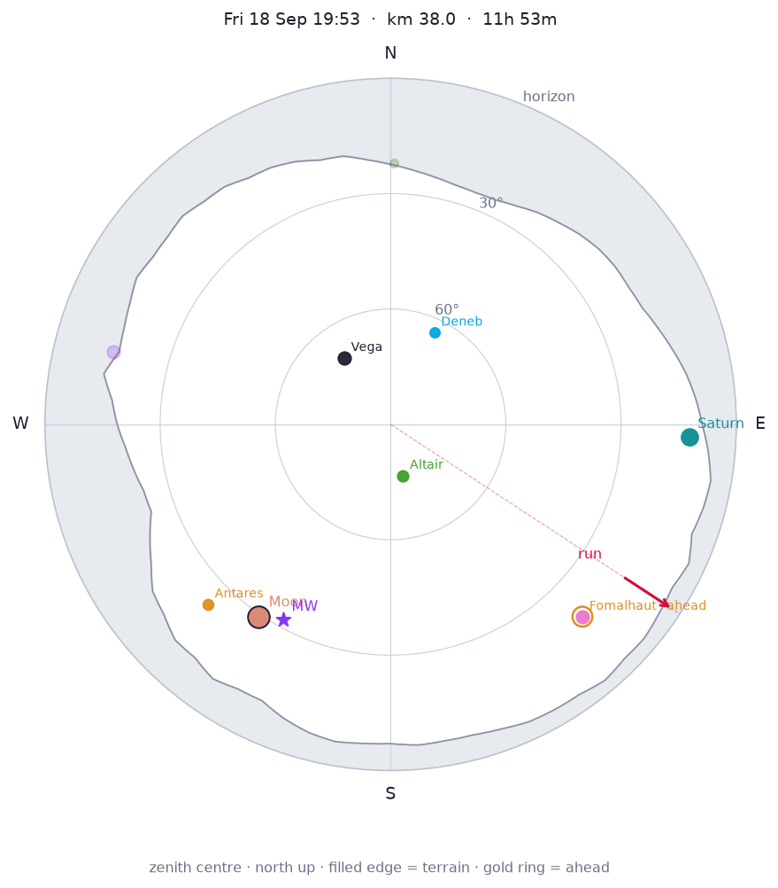
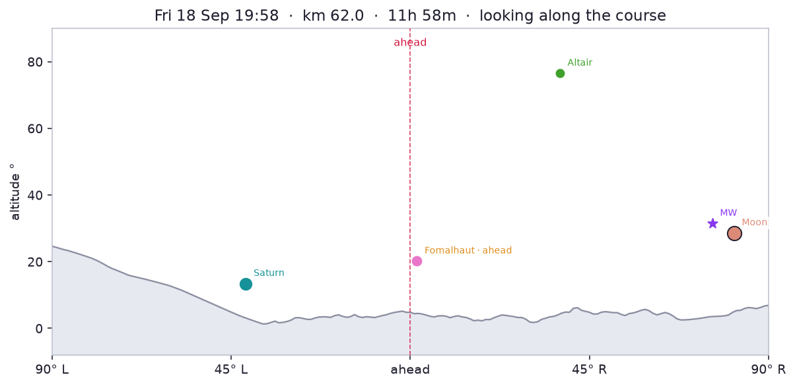

Moon first quarter, 47% lit, 29° SW (216°). Milky Way centre 31° SW (210°). Overhead: Aquila, Cygnus, Lyra.


Planets
- Saturn: 13° E (93°), mag 0.4
Constellations
- Overhead: Aquila, Cygnus, Lyra
- Up: Andromeda, Aquarius, Capricornus, Cassiopeia, Cepheus, Corona Borealis, Draco, Ophiuchus, Pegasus, Sagittarius, Serpens
- Rising: Cetus, Grus, Pavo, Piscis Austrinus
- Setting: Scorpius
Bright stars
- Vega (Lyra): 68° NW (323°), mag 0.0
- Altair (Aquila): 77° S (172°), mag 0.8
- Antares (Scorpius): 22° SW (226°), mag 1.0
- Fomalhaut (Piscis Austrinus): 20° SE (136°), mag 1.2
- Deneb (Cygnus): 64° NE (24°), mag 1.2